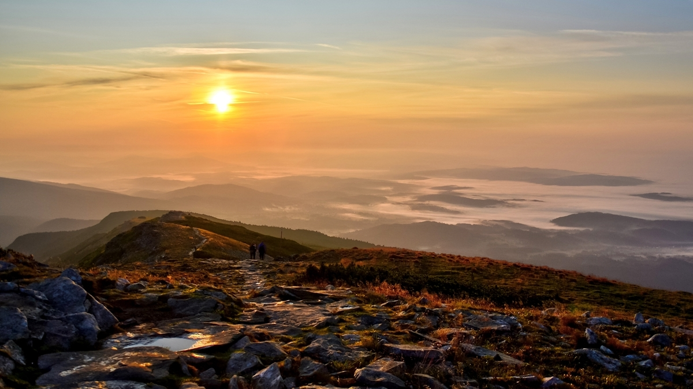
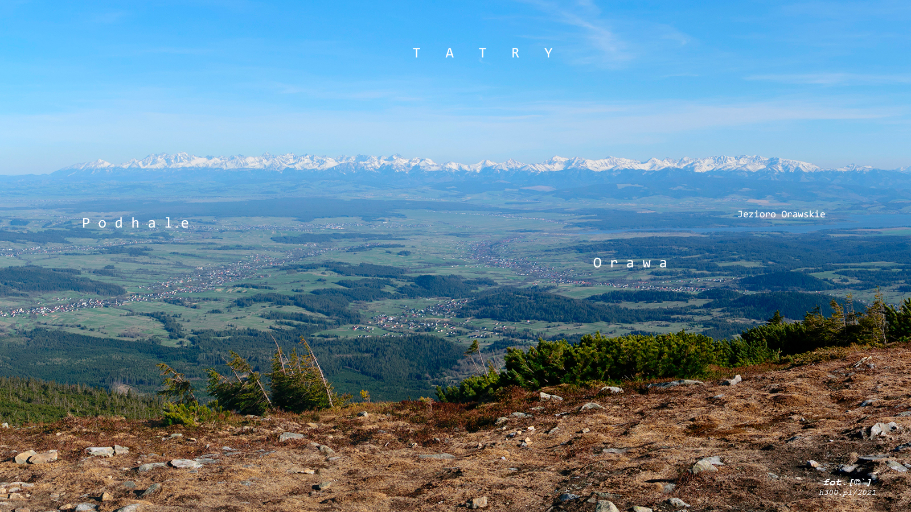
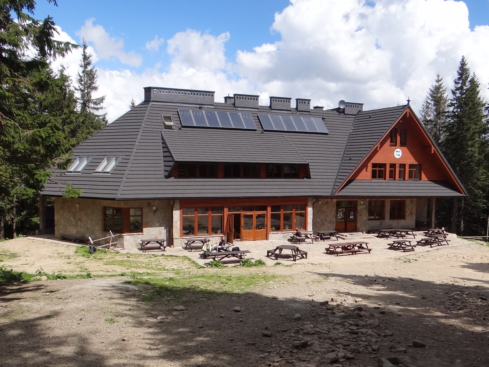
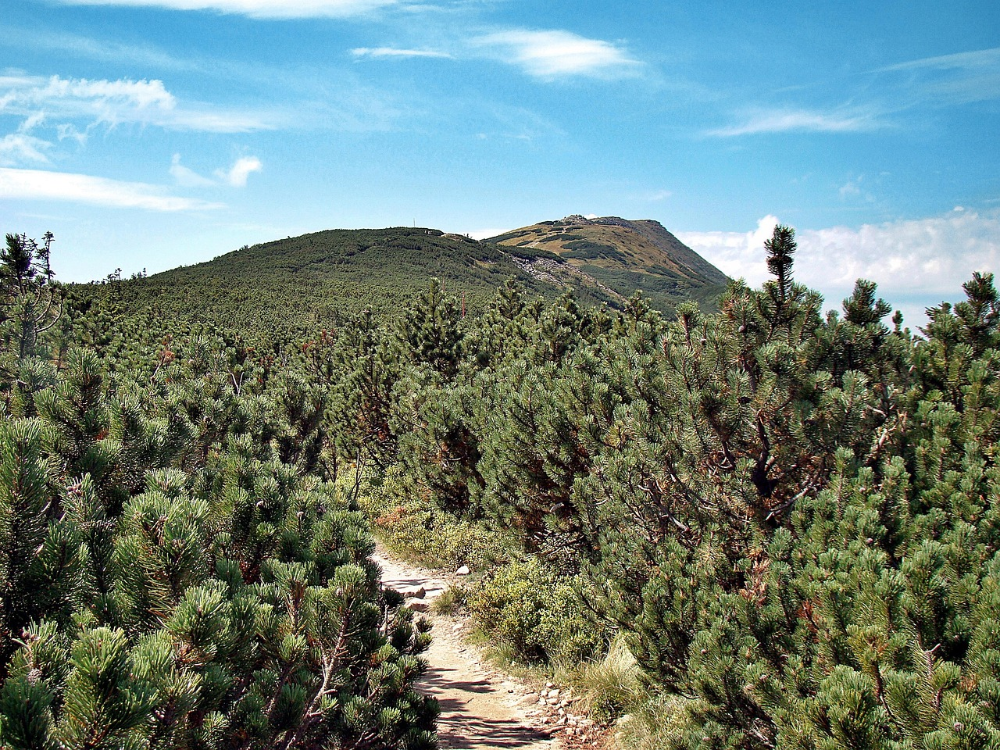

Babia Góra
Szczyt ponad chmurami
O atrakcji
Babia Góra (1725 m n.p.m.), znana również jako Diablak, to najwyższy szczyt Beskidu Żywieckiego i jeden z najbardziej malowniczych punktów widokowych w Polsce. Jest częścią Babiogórskiego Parku Narodowego, gdzie spotkasz rzadkie gatunki roślin oraz zjawiskowe piętra roślinności.
„Gdy wschód słońca nad morzem mgieł to Twój klimat, wejdź na Babią o świcie i zakochaj się w tej surowej, majestatycznej królowej Beskidów.”
üìç Lokalizacja
Babiogórski Park Narodowy, Zawoja
üìè Wysoko≈õƒá
1725 m n.p.m.
üö∂‚Äç‚ôÇÔ∏è Szlaki
czerwony, zielony, niebieski
⏱ Czas wejścia
ok. 2–3 h
üí∞ Wstęp
ok. 8–10 zł (BPN)
üìÖ Najlepszy czas
maj – październik
üß≠ Trudno≈õƒá
średnia
üß• Warunki
pogoda zmienna – zabierz kurtkę
Galeria




Lokalizacja
Ciekawostki
- Babia Góra bywa nazywana „Matką Niepogód” z powodu szybko zmieniającej się pogody.
- Jest częścią Korony Gór Polski.
- W 1933 roku utworzono tu pierwszy w Polsce rezerwat ścisły w górach.
- W pogodny dzień widać z niej Tatry, Pilsko, a nawet Małą Fatrę na Słowacji.